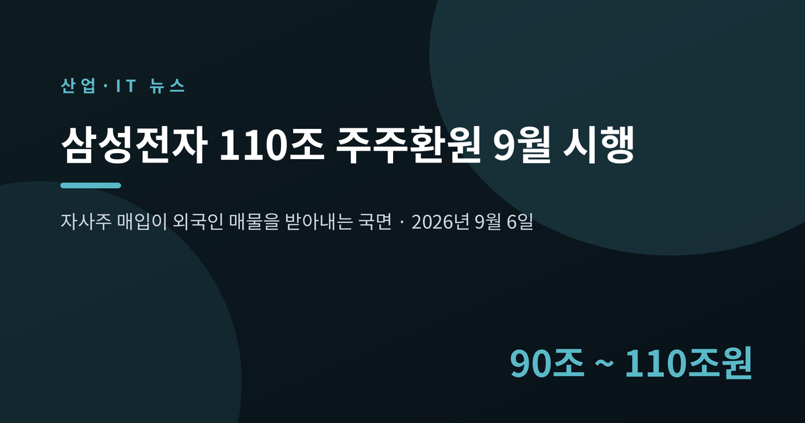
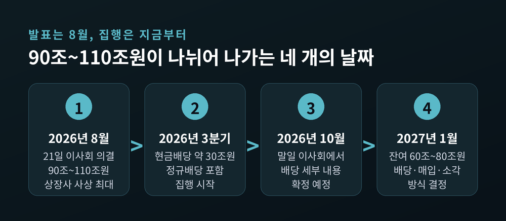
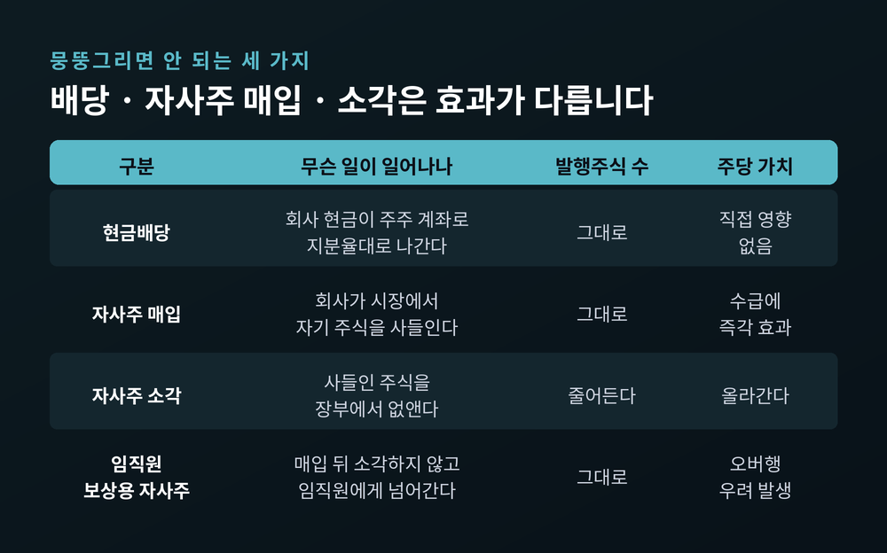
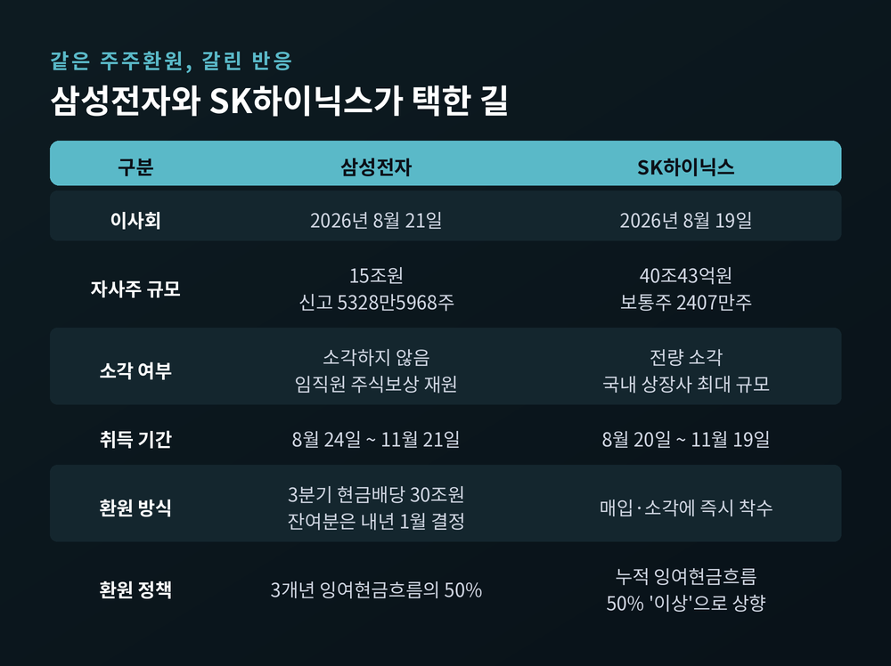
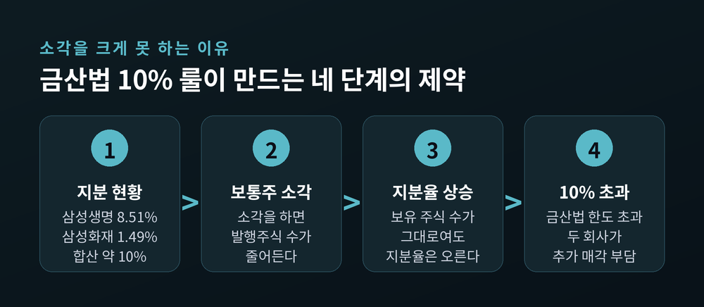
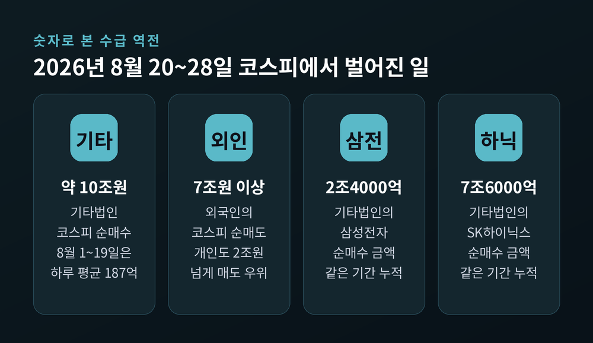
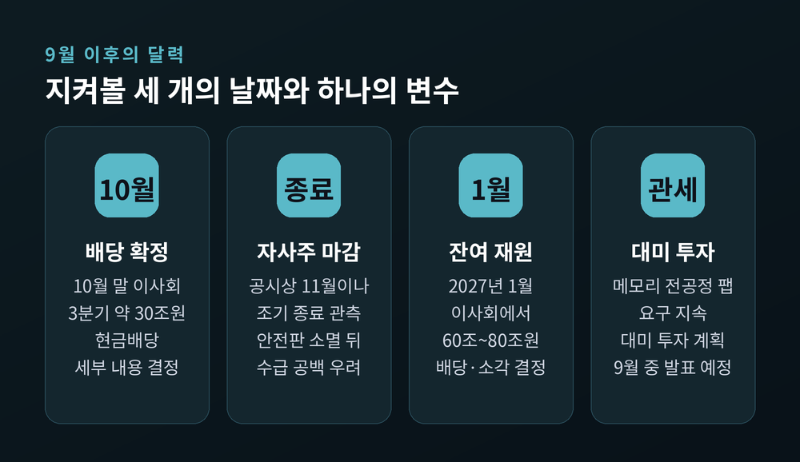

자사주 매입이 외국인 매물을 받아내는 9월, 규모보다 방식이 쟁점이 된 이유

이번 글에서는 삼성전자의 사상 최대 주주환원이 실제로 집행되기 시작한 9월 국면을 정리해 보겠습니다. 발표는 8월에 났지만, 돈이 시장에서 움직이는 건 지금입니다. 규모보다 방식이 왜 더 큰 쟁점이 됐는지까지 짚어보겠습니다.
세 줄 요약
삼성전자는 2026년 8월 21일 이사회를 열었습니다. 여기서 약 90조~110조원 규모의 2026년 주주환원 시행 방안이 의결됐습니다.
한국 상장기업 사상 최대 규모입니다. 종전 최대는 2020년의 20조3000억원이었습니다. 약 다섯 배를 넘어섭니다.
이 금액이 어디서 나왔는지가 중요합니다. 삼성전자는 2024~2026년 3개년 누적 잉여현금흐름의 50%를 주주에게 돌려주겠다고 약속해 왔습니다. 이 가운데 2024~2025년에 이미 29조3000억원을 집행했습니다. 정규배당 19조6000억원, 특별배당 1조3000억원, 자사주 매입·소각 8조4000억원입니다. 90조~110조원은 그 잔여분입니다.
집행은 두 번으로 쪼갰습니다. 3분기 중 정규배당을 포함해 약 30조원을 현금배당하고, 구체적인 내용은 10월 말 이사회에서 확정합니다. 나머지 약 60조~80조원은 2026년 실적이 확정되는 2027년 1월 이사회에서 방식과 규모를 정합니다.
3개년을 모두 합치면 누적 환원 규모는 120조~140조원에 이를 전망입니다.

같은 이사회에서 하나가 더 통과됐습니다. 임직원 보상용 약 15조원 규모의 자사주 매입입니다. 신고 수량은 5328만5968주, 취득 기간은 8월 24일부터 11월 21일까지, 장내 매수 방식입니다. 이 15조원은 90조~110조원과는 별개 재원입니다. 언론이 "110조+α"라고 표기한 까닭입니다.
여기서 용어를 한 번 정리하고 가겠습니다. 이 셋을 뭉뚱그리면 이번 사안이 왜 논란인지 알 수 없습니다.
현금배당은 회사 곳간의 현금이 주주 계좌로 나가는 것입니다. 발행주식 수는 그대로입니다. 지분율대로 나눠 가지므로 계열사와 대주주에게도 지분만큼 흘러갑니다.
자사주 매입은 회사가 시장에서 자기 회사 주식을 사는 것입니다. 매수 주체가 하나 늘어나는 셈이라, 당장의 수급에는 즉각 효과가 있습니다. 다만 이 단계에서 주식 수는 줄지 않습니다.
자사주 소각은 사들인 주식을 없애는 것입니다. 발행주식 수가 실제로 줄어들어 주당 가치가 올라갑니다. 투자자가 배당보다 매입·소각을 선호하는 이유입니다.
이번에 실망이 나온 지점이 정확히 여기입니다. 15조원어치를 사들이긴 하는데, 소각하지 않습니다. 성과인센티브와 특별경영성과급 같은 주식보상 재원으로 쓰입니다. 매입한 주식이 소각되지 않고 임직원에게 넘어가면 주당 가치 제고 효과는 제한됩니다. 보호예수가 풀린 뒤 잠재 매도 물량, 이른바 오버행으로 남을 수 있다는 우려도 함께 제기됐습니다.

비교 대상이 있어서 대비가 선명해졌습니다.
SK하이닉스는 이틀 앞선 8월 19일 이사회에서 보통주 2407만주 매입을 결정했습니다. 8월 18일 종가 166만2000원 기준으로 약 40조43억원 규모입니다. 발행주식의 약 3.3%에 해당합니다. 그리고 매입한 물량을 전량 소각하겠다고 밝혔습니다. 금액 기준으로 국내 상장사 자사주 소각 사례 중 최대입니다. 주주환원 정책도 누적 잉여현금흐름의 50% '범위 내'에서 '50% 이상'으로 넓혔습니다.
삼성전자는 현금배당을 앞세웠습니다. SK하이닉스는 매입·소각에 즉시 착수했습니다. 단기 수급만 놓고 보면 후자가 유리하다는 평가가 나온 배경입니다.
시장은 곧바로 반응했습니다. 8월 24일 삼성전자 주가는 전장 대비 8.70% 내린 25만7000원에 마감했습니다. 사상 최대 환원을 발표한 직후였습니다.
이유는 기대치에 있었습니다. 반도체 업황이 좋아 잉여현금흐름이 크게 늘면서, 시장은 환원 규모가 140조원까지 확대되고 대규모 소각이 뒤따를 것이라 선반영하고 있었습니다. 이사회는 즉각적인 소각 결정을 내놓지 않았습니다. 약 60조~80조원의 사용처가 다섯 달 뒤로 미뤄진 점이 결정적이었습니다.

여기서부터가 이번 사안의 가장 깊은 대목입니다.
삼성전자가 보통주 소각을 마음대로 늘리기 어려운 배경에는 금융산업의 구조개선에 관한 법률, 줄여서 금산법의 '10% 룰'이 있습니다.
삼성생명이 보유한 삼성전자 보통주 지분은 8.51%입니다. 삼성화재는 1.49%입니다. 합치면 약 10%로, 한도에 거의 닿아 있습니다.
문제는 소각의 산수입니다. 삼성전자가 보통주를 소각하면 전체 발행주식 수가 줄어듭니다. 두 회사가 가진 주식 수가 한 주도 변하지 않아도 지분율은 자동으로 올라갑니다. 10% 한도를 넘기면 삼성생명과 삼성화재가 삼성전자 주식을 추가로 팔아야 하는 부담이 생깁니다.
주주환원을 하려다 계열사에 매도 압력을 만드는 구조인 셈입니다. DS투자증권은 이를 고려해 내년 1월 확정될 잔여 재원 중 상당 부분이 배당으로 집행되고, 자사주 매입·소각은 10조~20조원 수준에 그칠 것으로 내다봤습니다. 다만 의결권이 없는 우선주는 금산법상 지분율 산정에서 빠지는 것으로 해석되는 만큼, 소각을 한다면 우선주 비중을 높일 가능성도 거론됩니다.

배당이 커지면 누가 받는지도 짚어둘 만합니다. 삼성물산이 삼성전자에서 받는 배당은 올해 1조7600억원에서 내년 최대 4조원 안팎으로 늘어날 것으로 추정됩니다. 3분기 30조원 배당을 기준으로 삼성생명은 약 2조5500억원, 삼성화재는 약 4500억원을 받을 것으로 예상됩니다. 이들이 받은 배당을 다시 자기 주주에게 돌려주면 그룹 안에서 '배당 순환'이 일어납니다.
교보증권 최보영 연구원은 이번 결정을 두고 공격적인 매입·소각 확대에는 못 미쳐 서프라이즈로 보기는 어렵지만, 자본배분 정책의 방향성이 명확해진 점은 긍정적이라고 평가했습니다.
이제 본론입니다. 자사주 매입이 외국인 순매도를 흡수하고 있느냐는 질문입니다.
회사가 자기 주식을 사면 투자자 분류상 '기타법인'으로 잡힙니다. 이 항목이 8월 하순부터 폭증했습니다.
한국거래소 자료에 따르면 8월 20일부터 28일까지 기타법인은 코스피에서 약 10조원을 순매수했습니다. 같은 달 1일부터 19일까지 하루 평균 순매수가 187억원이었던 것과 비교하면 차원이 다릅니다. 종목별로는 삼성전자 약 2조4000억원, SK하이닉스 약 7조6000억원이었습니다.
반대편에서는 외국인이 같은 기간 코스피에서 7조원 이상을 순매도했습니다. 개인도 2조원 넘게 팔았고, 연기금 역시 매도 우위였습니다. 집계 기간을 27일까지로 잡은 다른 자료에서는 기타법인 순매수 8조5707억원, 외국인 순매도 5조9100억원, 개인 순매도 3조2215억원으로 나타납니다. 기간이 하루 다른 데서 오는 차이입니다.

구조는 분명합니다. 기존의 주요 매수 주체가 일제히 물량을 내놓는 자리를 회사 자금이 받아내고 있습니다.
매입 속도는 예상보다 빠릅니다. 9월 2일 기준 삼성전자는 신고 수량 5328만5968주 가운데 1580만주, 약 29.65%를 취득했습니다. 하루 뒤인 9월 3일에는 1980만주로 37.2%까지 올라섰습니다. SK하이닉스도 같은 날 32.4%를 채웠습니다. 두 회사 합계 55조원 계획 가운데 8월 말 기준으로 약 45조원의 매수 여력이 남아 있었습니다.
다만 한계도 분명히 해두겠습니다. 자사주 매입이 시작된 8월 20일 이후 코스피는 6700~6900선에서 오르내리며 7000선을 넘지 못했습니다. 엔비디아가 예상을 웃도는 실적을 냈던 날에도 지수 상승 폭은 1%대에 그쳤습니다. 지금의 자사주 매입은 지수를 끌어올리는 상승 동력이라기보다, 매도 물량을 받아내는 수급 안전판에 가깝다는 평가가 우세합니다.
밖에서 누르는 힘도 있습니다. 미국 30년물 국채금리는 5.3%대까지 올라 2007년 이후 19년 만의 최고 수준을 기록했습니다. 대형 인공지능 기업의 기업공개가 이르면 9월 말 거론되면서, 기관이 청약 자금을 마련하려 기존 주식 비중을 조정할 가능성도 변수로 꼽힙니다.
세 개의 날짜와 하나의 변수로 정리됩니다.
첫째, 10월 말 이사회입니다. 3분기 약 30조원 현금배당의 구체적인 내용이 확정됩니다.
둘째, 자사주 매입 종료 시점입니다. 공시상 종료일은 삼성전자 11월 21일, SK하이닉스 11월 19일입니다. 그런데 지금 속도라면 10월 초에서 중순 사이에 조기 종료될 수 있다는 관측이 나옵니다. 안전판이 사라진 자리에서 외국인 매도가 이어진다면 수급 공백이 부담이 될 수 있다는 우려도 함께 나옵니다. 다만 이는 전망이지 확정이 아닙니다.
셋째, 2027년 1월 이사회입니다. 잔여 60조~80조원을 배당으로 풀지, 매입·소각으로 돌릴지가 여기서 갈립니다. 이번 사안의 진짜 결말은 그날에 있습니다.
마지막은 변수입니다. 미국의 대미 투자 압박입니다. 하워드 러트닉 미국 상무장관은 미국에서 생산하면 관세가 없다는 기조를 거듭 밝혔고, 지난 7월에는 삼성전자와 SK하이닉스의 미국 내 메모리 생산시설 건설을 공개적으로 희망했습니다. 현재 삼성전자가 텍사스주 테일러에 짓는 것은 파운드리 공장이고, SK하이닉스가 인디애나주에 40억달러 이상을 들여 짓는 것은 고대역폭메모리 후공정 시설입니다. 미국이 원하는 메모리 웨이퍼 전공정 공장과는 성격이 다릅니다. 김정관 산업통상부 장관은 9월 4일 한국이 경쟁국 대비 불리하지 않게 협의 중이며 대미 투자 계획 발표는 9월 안에 마무리될 예정이라고 밝혔습니다.
주주환원과 대미 설비투자는 같은 곳간에서 나옵니다. 예전에는 곳간을 얼마나 채웠는지가 관심사였습니다. 지금은 그 곳간을 어디에 얼마나 나눠 쓰느냐가 관심사입니다.

정리하면 이렇습니다.
규모는 사상 최대가 맞습니다. 다만 시장이 물은 것은 규모가 아니라 방식이었습니다. 배당이냐 소각이냐, 그리고 언제냐였습니다.
— 돈의 크기보다 돈의 경로가 주가를 움직입니다.
지금 코스피의 하단을 받치고 있는 것은 외국인의 귀환이 아니라 기업 스스로의 매수입니다. 그 매수가 멈추는 날 무엇이 남아 있을지, 10월의 시장이 답을 내놓을 것입니다.
이 글은 정보 제공 목적으로 작성했습니다. 특정 종목의 매수·매도를 권유하지 않습니다.
본문의 수치와 사실은 2026년 9월 6일까지 공개된 보도와 공시를 기준으로 하며, 이후 상황은 달라질 수 있습니다.
투자 판단과 그에 따른 책임은 투자자 본인에게 있습니다.
참고 소스